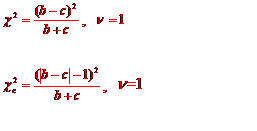
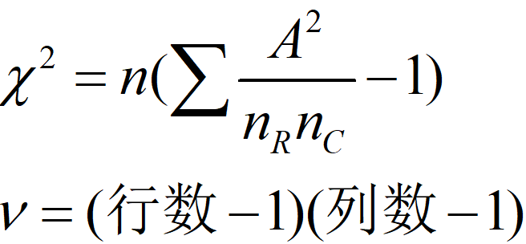
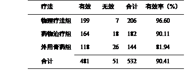
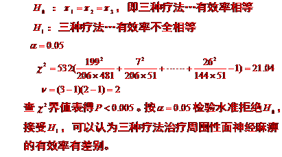
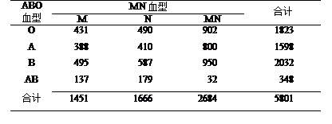
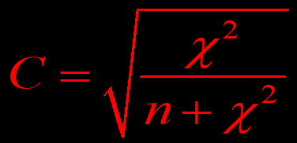
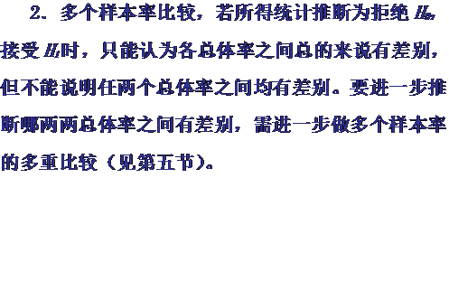
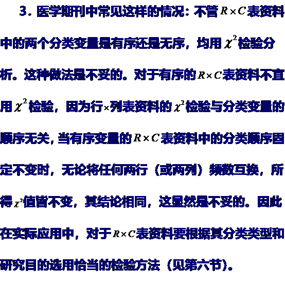
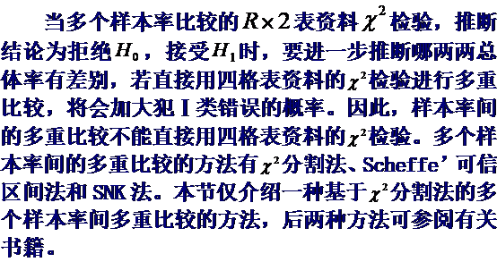

四格表资料的卡方检验
配对四格表资料的卡方检验
行×列表资料的卡方检验
多个样本率间的多重比较
| 用途 | 细节 |
|---|---|
| 两个总体率或构成比之间有无差别 | |
| 推 | 多个总体率或构成比之间有无差别 |
| 多个样本率的多重比较 | |
| 断 | 两个分类变量之间有无关联性 |
| 频数分布拟合优度的检验 | |
| 检验统计量 | χ2 |
| 应用 | 计数资料 |
什么是卡方检验，从卡方分布开始说：它是一种连续型分布：按分布的密度函数可给出自由度=1，2，3，……的一簇分布曲线，χ2 分布的一个基本性质是可加性：如果两个独立的随机变量X1和X2分别服从自由度ν1和ν2的分布，那么它们的和（ X1+X2 ）服从自由度（ ν1+ν2 ）的χ2 分布。
上图显示了3种样本的χ2 分布曲线，由图像可看出，自由度为1时，随着χ2 增大，P值是下降的。

上图显示了卡方检验题目中表格长得样子


TRC为第R行C列的理论频数,nR为相应的行合计,nC为相应的列合计

χ2 分布是一连续型分布，而四格表资料属离散型分布，由此计算得的统计量χ2 的抽样分布亦呈离散性质。为改善χ2 统计量分布的连续性，则需行连续性校正。
通用公式的校正：

专用公式的校正：
n≥40并T≥5，专用公式；
n≥40且1≤T<5，校正公式；
与计量资料推断两总体均数是否有差别有成组设计和配对设计一样，计数资料推断两个总体率（构成比）是否有差别也有成组设计和配对设计，即四格表资料和配对四格表资料。
本法一般用于样本含量不太大的资料。因为它仅考虑了两法结果不一致的两种情况(b, c)，而未考虑样本含量n和两法结果一致的两种情况(a, d)。所以，当n很大且a与d的数值很大（即两法的一致率较高），b与c的数值相对较小时，即便是检验结果有统计学意义，其实际意义往往也不大。样本量越大，数学计算得两方法不一样这条结论就越假。大多数情况这句话不用写，但是极少数题目故意问你的时候，你就要祭出这个思想了。

A是每一个原始数值。如下图所示


如果做两组血型这样的存在于一个人体内的独立的样本，则做关联性检验（就是额外补另一个公式叫Pearson列联系数C）。


增大样本含量以达到增大理论频数的目的，属首选方法，只是有些研究无法增大样本含量，如同一批号试剂已用完等。
根据专业知识，删去理论频数太小的行或列，或将理论频数太小的行或列与性质相近的邻行或邻列合并。这样做会损失信息及损害样本的随机性。不同年龄组可以合并，但不同血型就不能合并。
改用双向无序R×C表的Fisher确切概率法（可用SAS软件实现）



总之应该是SPSS应用，不用手算
两样本率比较，差别有统计学意义时，P值越小说明
A 两样本率差别越大
B 两总体率差别越大
C 越有理由认为两样本率不同
D 越有理由认为两总体率不同
E 越有理由认为两样本率相同
欲比较两组阳性反应率，在样本量非常小的情况下(如n1<10 , n2<10) ，应采用的假设检验方法是
A 四格表χ2检验
B 校正四格表χ2检验
C Fisher确切概率法
D 配对χ2检验
E 校正配对χ2检验
回第一章通常分析四格表需用连续性校正χ2检验的情况是
A T<5 B T<1或n<40 C T<5且n<40 D 1≤T<5且n>40 E T<5或n<40
当四格表的周边合计数不变时，如果某格的实际频数有变化，则其理论频数是
A 增大 B 减小 C 不变 D 不确定 E 随该格实际频数的增加而增减
进行四组样本率比较的 χ² 检验,如 χ² > χ² 0.01,3, 可认为
A 四组样本率均不相同
B 四组总体率均不相同
C 至少有两组样本率不相同
D 四组样本率相差较大
E 至少有两组总体率不相同
从甲、乙两文中,查到同类研究的两个率比较的χ²检验,甲文χ² > χ²0.01,1, 乙文χ² > χ²0.05,1, 可认为
A 两文结果有矛盾
B 两文结果完全相同
C 甲文结果更为可信
D 乙文结果更为可信
E 甲文说明总体的差异较大
利用 χ2 检验公式不适合解决的实际问题是
A 比较两种药物的有效率
B 检验某种疾病与基因多态性的关系
C 两组有序试验结果的药物疗效
D 药物三种不同剂量显效率有无差别
E 两组病情“轻、中、重”的构成比例